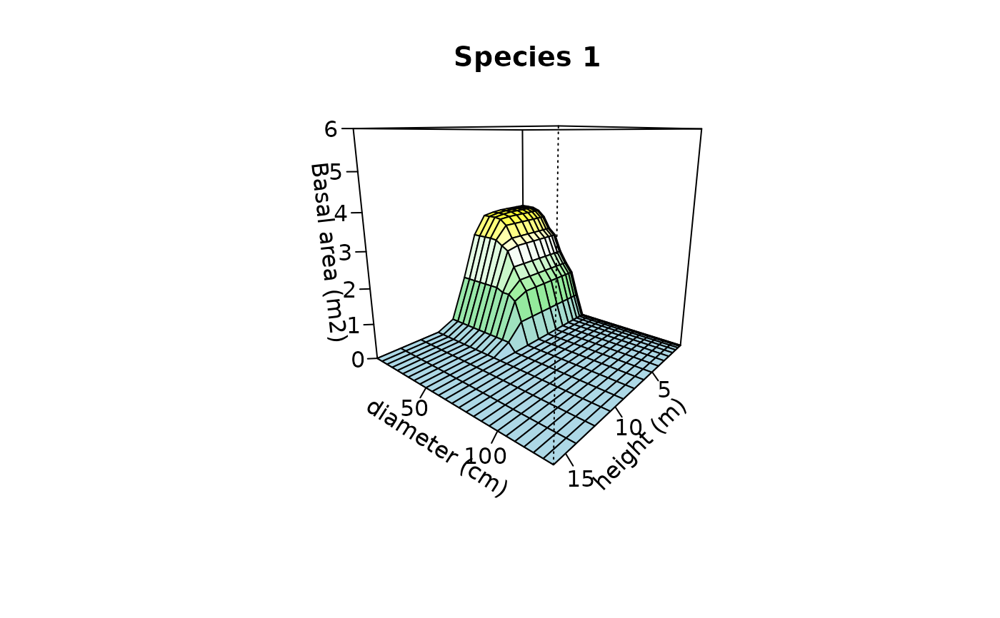

plot.CAS.RdCreate plots used to inspect one or more cumulative abundance profiles.
# S3 method for CAS plot(x, plot=NULL, species=NULL, sizes1=NULL, sizes2 = NULL, palette = colorRampPalette(c( "light blue","light green","white", "yellow","orange","red")), zlim=NULL,...)
| x | An object of class |
|---|---|
| plot | A string indicating the plot record whose surface is to be drawn. |
| species | A string indicating the species whose profile is to be drawn. |
| sizes1 | A vector containing the size values associated to each primary size class. If |
| sizes2 | A vector containing the size values associated to each secondary size class. If |
| palette | Color palette for z values. |
| zlim | The limits for the z-axis. |
| ... | Additional plotting parameters for function |
De Cáceres, M., Legendre, P. & He, F. (2013) Dissimilarity measurements and the size structure of ecological communities. Methods in Ecology and Evolution 4: 1167-1177.
CAS, persp
## Create synthetic tree data pl = rep(1,100) # All trees in the same plot sp = ifelse(runif(100)>0.5,1,2) # Random species identity (species 1 or 2) h=rgamma(100,10,2) # Heights (m) d = rpois(100, lambda=h^2) # Diameters (cm) m = data.frame(plot=pl,species=sp, height=h,diameter=d) m$ba = pi*(m$diameter/200)^2 print(head(m))#> plot species height diameter ba #> 1 1 2 7.185114 53 0.220618344 #> 2 1 2 4.052879 25 0.049087385 #> 3 1 2 3.291432 7 0.003848451 #> 4 1 1 7.589972 52 0.212371663 #> 5 1 2 3.276683 5 0.001963495 #> 6 1 2 5.727769 40 0.125663706## Size classes heights = seq(0,4, by=.25)^2 # Quadratic classes diams = seq(0,130, by=5) # Linear classes ## Stratify tree data X<-stratifyvegdata(m, sizes1=heights, sizes2=diams, plotColumn = "plot", speciesColumn = "species", size1Column = "height", size2Column = "diameter", abundanceColumn = "ba") ## Build cummulative abundance surface Y = CAS(X) ## Plot the surface of species '1' in plot '1' using heights and diameters plot(Y, species=1, sizes1=heights[-1], xlab="height (m)", ylab="diameter (cm)", sizes2=diams[-1], zlab="Basal area (m2)", zlim = c(0,6), main="Species 1")#> Warning: surface extends beyond the box